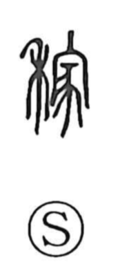

稼

Uncategorized
Kun: kasegu, ueru | On: ka
to earn ・ work for a living ・ to plant (crops)
Explanation
A phono-semantic character formed with the grain radical 禾, signaling agriculture, and 家 as the phonetic that gives the On reading ka. It originally evoked the act of planting rice seedlings and striving for a larger harvest. From this image of diligent cultivation, Japanese usage broadened to kasegu: the effort one puts into making a living—earning money, accumulating gains, and exerting oneself in work well beyond farming.